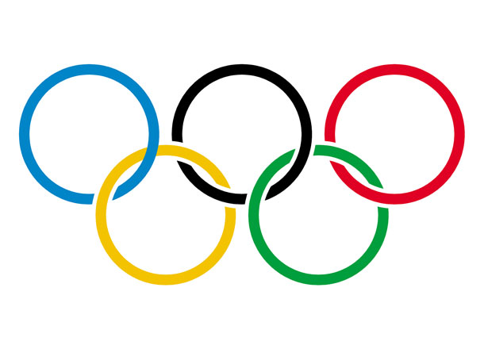
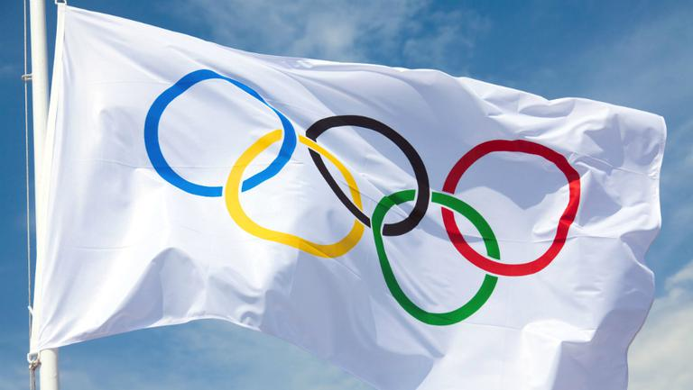
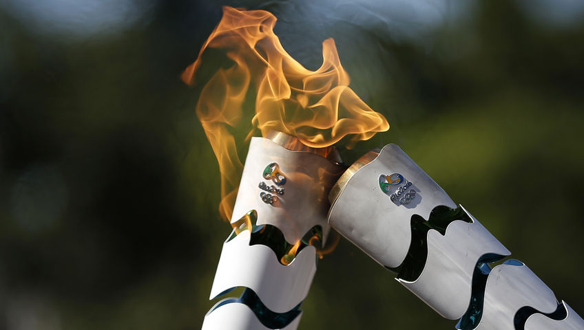
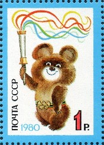

- ACASA
- ISTORIA
Simboluri olimpice
Mişcarea olimpică foloseşte mai multe simboluri, multe dintre ele reprezentând ideile şi idealurile lui Coubertin. Probabil, cel mai cunoscut simbol îl reprezintă inelele olimpice.
Inelele olimpice
Aceste cinci inele înlănţuite simbolizează unitatea celor cinci continente (cele două Americi sunt considerate un singur continent). Ele apar în cinci culori pe steagul olimpic de culoare albă. Aceste culori: alb (fondul drapelului), roşu, albastru, verde, galben şi negru au fost alese astfel încât fiecare naţiune să aibă cel puţin una din ele reprezentată pe steagul naţional.

Drapelul olimpic

Flacăra olimpică

Mascota olimpică

Drapelul olimpic a fost adoptat în 1914 dar primele Jocuri la care a fluturat au fost Jocurile de la Antwerp din 1920.
Deviza olimpică
Deviza olimpică oficială este „Citius, Altius, Fortius” (Mai repede, mai sus, mai puternic).
Probabil idealurile lui Coubertin sunt cel mai bine reprezentate de jurământul olimpic:
„Cel mai important lucru la Jocurile Olimpice nu este să câştigi ci să participi, aşa cum în viaţă nu contează triumful ci lupta. Esenţial nu e să cucereşti ci să lupţi bine. ”
Flacăra olimpică este aprinsă la Olympia, Grecia şi purtată până în oraşul gazdă de atleţi; joacă un rol important la ceremonia de deschidere şi arde pe tot parcursul olimpiadei. Torţa olimpică a fost introdusă la Olimpiada din 1936 de la Berlin.
Mascota olimpică, un animal sau o figură umană reprezintă moştenirea culturală a ţării gazdă şi a fost introdusă la Jocurile din 1968 din Mexico. A început să joace un rol important de la JO din 1980 de la Moscova cu debutul ursuleţului Misha.